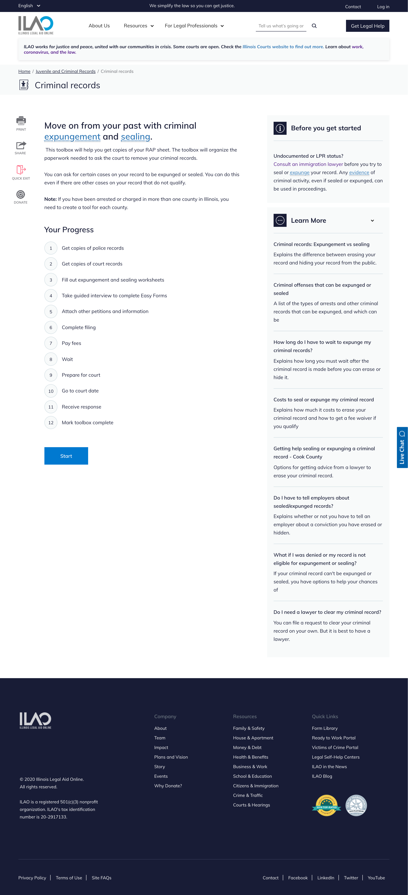
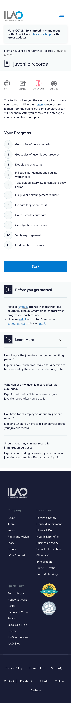

Toolbox tool content type
Every toolbox should have at least 2 tools. Each tool must have at least 1 step.
Todo
Explore the possibility of supporting tools that do not reside inside a toolbox.
Creating or editing a tool
When creating a tool, add:
A title
A relationship to an existing toolbox
A content description. This is used throughout the website.
A primary legal category
A selector form label; this will appear on the toolbox page
An effort level. Use easy for anything that can be completed in 1 week or less, medium for anything that takes 1-6 months and hard for anything that typically takes 6 months or more.
Purpose description. This appears on the page after a user selects toolboxes.
Overview. This is a summary of the tool and appears above the list of steps
Optionally add a before you get started block to add any critical warnings or other information the user should have before starting
Optionally add a Learn more section. This can use an existing guide or be hand-curated.
Add each tool step in the tools list (these can not be added until the tool steps exist)
What users see
When viewing a tool page a user will see:
The overview
The list of steps, numbered under a “Your Progress” block
A start button to go to the next step
Before you get started block with an information icon
A learn more block with a … icon if a learn more block is provided
Desktop:
Mobile:
{kind=link}